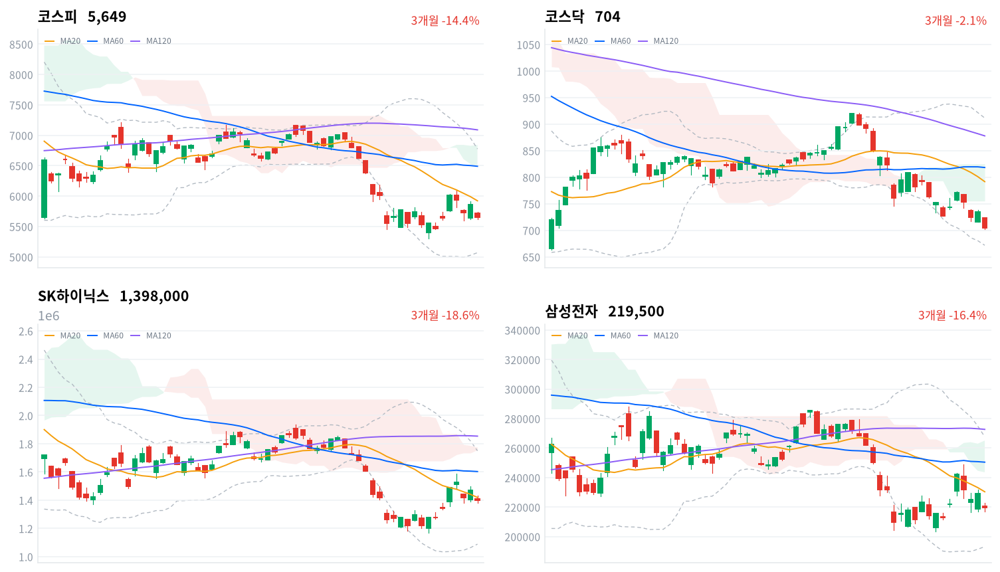

직전 미국장에서 오라클의 대규모 AI 재원 조달 계획에 반도체주가 내리자, 코스피는 갭 하락으로 출발해 전날 되찾은 5,800선을 내줬다. 외국인은 1조5,165억원을 순매도했고 전날 반등을 받친 기관도 매도로 돌아섰다(당일 잠정).
기관 매수만으로 만든 반등을 10월 30일 낙폭의 되돌림으로 본 전날 판단은 철회한다. 외국인 매도가 멈추는지는 미국 중간선거 개표와 겹치는 11월 4일 정규장에서 확인한다.
직전 11월 2일 미국 세션에서 오라클이 AI 인프라 재원으로 대규모 주식·회사채 발행 계획을 밝히고 필라델피아 반도체지수가 3.37% 내렸다는 보도가 나왔다. 코스피는 전날 기관 매수로 만든 반등을 하루 만에 모두 내줬다. 외국인은 1조5,165억원을 순매도했고, 전날 1조원 넘게 샀던 기관도 매도로 돌아섰다(당일 잠정).
장 마감 뒤 보도는 유가 급락과 미국 금리 하락이라는 호재가 AI 투자 수익성과 자금조달 능력에 대한 의구심에 묻혔다고 설명한다. 하락의 계기에 대한 이 설명에는 동의한다. 다만 이 설명은 AI 기업의 자금 부담이 메모리 주문 감소로 이어지는지를 아직 보여 주지 못했고, 실제 투자 축소 여부를 확인해야 한다는 의견도 함께 보도됐다. 우리가 이날 새로 읽는 것은 수급이다. 11월 2일 반등을 받친 국내 기관은 외국인이 돌아오지 않자 하루 만에 매도로 바뀌었고, 외국인 매도가 다시 커지자 지수는 반등분을 모두 내줬다.
그래서 10월 30일 이후 한국 반도체의 하락을 국내 매수로 되돌릴 수 있는 하루짜리 충격으로 본 해석은 수정한다. 미국에서 AI 투자 부담 소식이 이어지는 동안에는 외국인 매도가 지수 방향을 좌우하고, 국내 기관 매수는 하단을 하루 받치는 데 그친다고 본다. 이날 대만가권도 코스피와 같은 폭으로 내려, 하락은 한국 고유의 수급보다 아시아 AI 하드웨어 공통의 충격에 가까웠다. 시장이 메모리 수요 전망 자체를 낮추기 시작했을 수도 있으나, 메모리 주문이나 가격 전망을 낮춘 1차 자료는 아직 없다. 두 설명은 메모리 가격 자료와 11월 4일(미국 시간) AMD 실적의 데이터센터 전망에서 구분된다.
새로 제안할 상품은 없다. 한국 반도체는 미국과 대만의 움직임을 따라 내려, 이날 한국 장이 미국 반도체·AI 하드웨어 업종의 판단에 보탤 새 정보는 크지 않다. 하루 급락만으로 메모리 수요 전망이 바뀌었다고 보기도 이르다. 정유주 급락은 아직 타결되지 않은 미·이란 협상을 앞당겨 반영했다고 본다. 같은 날 미군의 이란 타격 보도도 나와 협상 결과는 열려 있고, 이 판단은 지수 대비 성과로 확인한다. 가장 가까운 결정적 일정은 미국 중간선거 개표와 겹치는 11월 4일 정규장의 외국인 코스피 순매수 방향이다.
코스피가 11월 3일 기준 20일 이동평균 5,923 위에서 마감하면, 외국인 매도가 지수 방향을 좌우한다는 오늘 판단을 철회한다. 그 선은 10월 30일 급락 직전 종가와 가까워, 그 위 마감은 외국인 매도가 이어지는 중에도 하락 추세가 멈췄다는 뜻이다. 그 경우 국내 기관 매수가 하단을 받친다는 설명을 더 설득력 있게 본다.
출처: 매일경제, 헤럴드경제
직전 11월 2일 미국 세션에서 나스닥은 1.07%, S&P500은 0.51% 내렸고 다우는 0.41% 올랐다. 낙폭은 반도체·AI 인프라에 몰렸고, 오라클이 8.8% 급락했다는 보도가 나왔다. 이날 아시아에서는 대만가권이 코스피와 같은 폭으로 내렸고 상해종합(-0.82%)도 내렸다. 닛케이는 일본 휴장으로 11월 2일 기준 0.33% 하락, 항셍은 0.57% 상승이다. 코스피는 네 지수 평균보다 2.55%포인트 약했다.
코스피는 5,715에서 갭 하락으로 출발했다. 한국 정규장 동안 S&P500 선물은 0.43%, 나스닥 선물은 0.46% 내렸다. 시가 이후 코스피의 추가 하락은 미국 선물의 하락보다 훨씬 컸다.
하루 범위(5,616~5,736)로 보면 코스피는 아래쪽 3분의 1에서 마감했다. 코스닥은 시가가 그날의 고가였고 저점 바로 위에서 끝났다. 원/달러는 장 초반 고점에서 내려와, 외국인의 대규모 매도에도 원화는 크게 약해지지 않았다.
외국인 매도에 기관 매도가 더해지고 개인만 산 날이다. 낙폭은 반도체·2차전지·AI 부품주에서 컸고, 조선과 항공은 지수 급락 속에서도 버텼다. 시간외 거래 자료는 없어 장 마감 뒤 흐름은 확인하지 못했다.
출처: 매일경제, 헤럴드경제
코스피는 3.59% 내린 5,649, 코스닥은 4.08% 내린 704.39로 마감했다. AI 투자 자금조달 우려에 반도체가 급락하면서 코스피는 전날 되찾은 5,800선을 하루 만에 내줬고, 코스닥은 700선을 간신히 지켰다.
| 지수 | 종가 | 등락률 | 시가 | 고가 | 저가 | 전일 종가 |
|---|---|---|---|---|---|---|
| 코스피 | 5,648.79 | -3.59% | 5,715.19 | 5,735.92 | 5,615.80 | 5,859.08 |
| 코스닥 | 704.39 | -4.08% | 723.92 | 723.92 | 702.34 | 734.36 |
장중 반등 시도는 오전에 끝났다. 코스피는 10:30 무렵 시가 수준(5,716)까지 되올랐다가 오후로 갈수록 밀려 장중 한때 5,616까지 떨어졌다. 저가 매수가 오전 반등을 오후까지 잇지 못했고, 마감 전 되올린 폭도 작았다.
| 주체 | 순매수(억원) |
|---|---|
| 개인 | +16,538 |
| 외국인 | -15,165 |
| 기관 | -5,022 |
| 주체 | 순매수(억원) |
|---|---|
| 개인 | +3,188 |
| 외국인 | -740 |
| 기관 | -2,343 |
반등을 받쳤던 기관이 매도로 돌아서자, 외국인 매도를 받아 낸 것은 개인뿐이었다. 외국인은 코스피에서 1조5,165억원을 순매도해(전일 3,845억원 순매도, 당일 잠정) 3거래일째 팔았고, 규모는 최근 10거래일 가운데 10월 30일(1조6,149억원) 다음으로 컸다. 기관은 5,022억원 순매도(전일 1조2,257억원 순매수)로 방향을 바꿨고, 개인은 1조6,538억원을 순매수(전일 1조3,303억원 순매도)했다.
외국인 순매도 상위는 SK하이닉스(6,376억원)와 삼성전자(2,062억원)였다는 보도가 나왔다. 매체마다 집계 시점이 달라 보도된 외국인 합계는 위 표와 다르다. 전일 값도 이날 다시 받은 잠정치라, 지난 글의 기관 1조2,282억원 순매수·외국인 3,848억원 순매도와 조금 다르다.
코스닥에서도 기관이 2,343억원 순매도(전일 627억원 순매수)로 돌아섰고, 외국인은 740억원을 팔았다. 개인만 3,188억원을 순매수해 4.08% 하락을 받치지 못했다.
장중 누적 수급과 프로그램 매매는 받을 수 있는 자료가 없어 싣지 않는다.
출처: 헤럴드경제
| 순위 | 종목/ETF | 구분 | 거래대금 | 비고 |
|---|---|---|---|---|
| 1 | SK하이닉스 | 개별주 | 3.15조원 | - |
| 2 | 삼성전자 | 개별주 | 2.89조원 | - |
| 3 | 반도체 테마 ETF | 테마·롱 | 1.53조원 | 29종 합산 |
| 4 | 삼성전기 | 개별주 | 0.68조원 | - |
| 5 | KODEX CD금리액티브(합성) | 단기금리·현금성 | 0.48조원 | - |
| 6 | SK스퀘어 | 개별주 | 0.42조원 | - |
| 7 | 삼성전자우 | 개별주 | 0.39조원 | - |
| 8 | 삼성SDI | 개별주 | 0.38조원 | - |
| 9 | 2차전지 테마 ETF | 테마·롱 | 0.36조원 | 14종 합산 |
| 10 | 대덕전자 | 개별주 | 0.22조원 | - |
단위 백만원 원본을 조 단위로 환산했다. 같은 기초자산 ETF는 방향별로, 같은 테마 섹터 ETF는 테마별로 묶고 지수·해외 ETF는 제외했다.
거래가 몰린 곳이 가장 크게 내린 곳이었다. SK하이닉스(3.15조원)·삼성전자(2.89조원)·반도체 테마 ETF 29종 합산(1.53조원)이 1~3위였고, 삼성전기(0.68조원)·대덕전자(0.22조원) 같은 AI 기판·부품주도 상위에 들었다. 2차전지에서는 삼성SDI(0.38조원)와 2차전지 테마 ETF 14종 합산(0.36조원)이 함께 들었다.
단기금리 상품인 KODEX CD금리액티브(합성)(0.48조원)도 5위였다. 표 안에 인버스 상품은 없었다. 거래대금은 매수와 매도를 합한 값이라, 반도체 상품의 큰 거래가 순유입인지 순유출인지는 말해 주지 않는다.
하락은 반도체 한 업종에 그치지 않았다. 대표 ETF 기준 12개 섹터 가운데 오른 것은 조선(+0.26%) 하나였고, 2차전지(-6.60%)·반도체(-6.16%)·로봇(-5.23%)의 낙폭이 가장 컸다. 반도체는 1개월 기준 31.26% 내려 섹터 가운데 가장 약하지만, 1년 기준으로는 여전히 86.94% 높다.
업종 단위로 보면 오른 쪽은 운송·내수 일부였다. 항공사(+14.52%)는 9종목이 모두 올랐지만 한진칼 상한가가 업종 등락률을 크게 끌어올렸고, 대한항공(+1.92%)도 올랐다. 받은 업종 가운데 종목 수가 많은 업종은 대부분 오른 종목이 3분의 1에 못 미쳤다(화학 122종목 중 32종목, 건설 78종목 중 14종목, 제약 174종목 중 40종목). 하락은 소수 대형주에 국한되지 않은 폭넓은 매도였다.
반도체 대형주가 지수 하락의 대부분을 만들었다(SK하이닉스 -5.03%, 삼성전자 -4.15%). 두 종목이 코스피 하락폭의 63%를 차지했다는 보도가 나왔다. 지주사 SK스퀘어(-5.37%)와 장비·부품주 한미반도체(-6.10%)·이수페타시스(-9.32%)·디아이(-12.68%)는 더 크게 내렸다. 재료는 메모리 주문이나 가격이 아니라 오라클의 재원 조달 계획이 키운 AI 투자 자금 부담 우려였다.
한진칼은 상한가로 마감했다(한진칼 +29.97%). 호반그룹의 장내 추가 매입과 조원태 회장의 지분 매입 계약 공시로 경영권 지분 경쟁이 부각됐다.
삼성바이오로직스는 지수와 반대로 올랐다(삼성바이오로직스 +2.11%). 확인된 재료는 없다.
AI 기판·부품주는 반도체보다 크게 내렸다(대덕전자 -13.30%, 삼성전기 -7.38%, LG이노텍 -7.18%). AI 관련주 조정 속 동반 하락이라는 보도가 나왔고, 대덕전자는 3분기 실적이 기대를 웃돌았는데도 급락했다. 종목별 원인은 확인되지 않았다.
2차전지 대형주도 급락했다(삼성SDI -9.20%, LG에너지솔루션 -5.06%). 삼성SDI의 공매도 거래 비중이 14.07%였다는 집계가 나왔지만, 하락을 설명할 확인된 재료는 없다.
묶음 밖에서는 정유주가 가장 크게 내렸다(S-Oil -11.77%, SK이노베이션 -9.36%). 미·이란 협상 기대에 유가가 7%대 급락하면서 재고평가이익이 줄어든다는 우려가 나왔다. 두산에너빌리티(-6.28%)는 52주 최저로 떨어졌다. 조선은 HD한국조선해양(+3.01%)·삼성중공업(+0.93%)이 올라 지수 급락을 비켜 갔다.
출처: 매일경제, 헤럴드경제, 뉴스1, 한국경제, 잡포스트, CBC뉴스, 톱스타뉴스, 아주경제
국고채 금리는 주식 급락에도 단기물이 거의 그대로였고 장기물만 내렸다. 3년물은 0.4bp 내린 3.736%, 10년물은 3.3bp 내린 4.001%로 마감했다.
| 지표 | 금리 | 전일比(bp) | 기준일 |
|---|---|---|---|
| 국고채 3년 | 3.736% | -0.4 | 2026-11-03 |
| 국고채 10년 | 4.001% | -3.3 | 2026-11-03 |
| CD 91일 | 3.35% | +1.0 | 2026-11-03 |
| 회사채 AA- 3년 | 4.422% | -0.8 | 2026-11-03 |
| 한국은행 기준금리 | 3.00% | 0.0 | 2026-09 |
한국은행 경제통계시스템(ECOS) 기준. 기준금리는 2026년 9월 기준 값이다.
커브는 평평해졌다. 10년물과 3년물의 차이는 26.5bp로 2.9bp 좁아졌고, 위치는 최근 2년(532거래일)의 한가운데쯤이다. 직전 11월 2일 미국 10년물 금리가 약 2개월 만의 최저로 내려갔다는 보도가 있어, 국내 장기물 하락은 그 움직임이 하루 늦게 전해진 것과 시점이 겹친다.
신용 금리차는 주식 급락에도 거의 움직이지 않았다. 회사채 AA- 3년물은 0.8bp 내린 4.422%로, 국고채 3년물과의 차이는 68.6bp로 0.4bp 좁아졌다. 최근 2년(532거래일) 가운데 넓은 쪽 11% 안이라, 기업 신용 위험에 매겨진 값은 이날 급락 전부터 높은 채로 남아 있다.
출처: 매일경제
| 미국 참조 지수 | 구분 | 관측 | 등락률 | 업종 내 상승 비율 | 기준일 |
|---|---|---|---|---|---|
| 반도체·AI 하드웨어 | 종목 | SK하이닉스 | -5.03% | – | 11/3 |
| 반도체·AI 하드웨어 | 종목 | 삼성전자 | -4.15% | – | 11/3 |
| 반도체·AI 하드웨어 | 지수 | 대만가권 | -3.59% | – | 11/3 |
| 전력망 | 종목 | HD현대일렉트릭 | -1.68% | – | 11/3 |
| 전력망 | 종목 | LS ELECTRIC | -5.67% | – | 11/3 |
| 전력망 | 종목 | 효성중공업 | -3.85% | – | 11/3 |
| 방산 | 업종 | 우주항공과국방 | -1.15% | 14% | 11/3 |
| 방산 | 종목 | 한화에어로스페이스 | 0.00% | – | 11/3 |
| 산업재 | 업종 | 조선 | -0.15% | 23% | 11/3 |
| 산업재 | 종목 | HD현대중공업 | -0.17% | – | 11/3 |
| 산업재 | 종목 | 한화오션 | -2.00% | – | 11/3 |
| 산업재 | 종목 | 삼성중공업 | +0.93% | – | 11/3 |
| 금속·광업 | 업종 | 비철금속 | -0.89% | 32% | 11/3 |
| 금속·광업 | 종목 | POSCO홀딩스 | -5.83% | – | 11/3 |
| 금융 | 업종 | 은행 | -0.89% | 0% | 11/3 |
| 금융 | 업종 | 증권 | -1.48% | 8% | 11/3 |
| 금융 | 종목 | KB금융 | -1.30% | – | 11/3 |
| 금융 | 종목 | 신한지주 | -1.38% | – | 11/3 |
| 소프트웨어 | 업종 | 소프트웨어 | -2.25% | 28% | 11/3 |
| 소프트웨어 | 종목 | NAVER | -3.65% | – | 11/3 |
| 에너지 | 종목 | S-Oil | -11.77% | – | 11/3 |
| 에너지 | 종목 | SK이노베이션 | -9.36% | – | 11/3 |
| 일본 | 지수 | 닛케이 | -0.33% | – | 11/2 |
| 중국 | 지수 | 항셍 | +0.57% | – | 11/3 |
| 중국 | 지수 | 상해종합 | -0.82% | – | 11/3 |
원/달러는 한국장 시간대에 09:00 고점 1,346원에서 11:30 저점 1,337원까지 내렸고, 15:30 마지막 값은 1,341원이었다(서울 외환시장 공식 종가 아님). 외국인이 주식을 1조원 넘게 판 날에도 주식 급락이 원화 약세로 번지지 않았다. 해외주식 펀드의 대기 자금이 달러를 사는 비용은 1,340원 안팎에서 크게 달라지지 않았고, 원화 현금의 참고 금리도 거의 그대로였다.
반도체는 한국 대형주가 급락하고(SK하이닉스 -5.03%, 삼성전자 -4.15%) 대만가권도 코스피와 같은 폭으로 내렸다. 미국 반도체·AI 하드웨어 업종이 직전 세션에 받은 AI 투자 자금조달 우려가 아시아 장에서도 이어진 것이다. 한국 장중 미국 선물의 낙폭은 그보다 작아, 이 하락이 미국 정규장에서 더 이어질지는 아시아 장만으로 판단하기 어렵다. 에너지는 한국 정유주가 유가 급락을 크게 반영했다(S-Oil -11.77%, SK이노베이션 -9.36%). 이 낙폭은 정제·재고 이익에 기대는 한국 정유사 고유의 반응이라, 미국 에너지 업종에 그대로 옮겨 읽기 어렵다.
미국 중간선거 투표가 11월 3일(현지) 치러지고, 한국 11월 4일 정규장이 출구조사 공표 시점과 겹친다는 보도가 나왔다. 증권가는 상하원보다 데이터센터 규제를 내건 주지사 선거에 더 주목한다. 연방 차원의 AI 규제가 없어 주지사 권한이 크고, 데이터센터가 많은 주 상당수에서 주지사 선거가 치러지기 때문이다.
주 정부가 데이터센터 인허가나 전력 공급 조건을 바꾸면 빅테크의 데이터센터 건설 속도가 달라지고, 그 속도가 반도체·전력기기 주문으로 이어진다. 증권사들은 다수당 확정이 지연되면 현금을 늘리고 레버리지를 낮추는 전략을 제시했다. 다음 분기점은 11월 4일 장중 개표 흐름이다.
11월 2일(현지) 미·이란 협상 재개 가능성이 부각되며 WTI와 브렌트유 선물이 각각 7.63%, 7.36% 급락했다는 보도가 나왔다. 같은 날 미군이 호르무즈 해협의 이란 요충지 케슘섬을 타격했다는 보도도 나왔고, 트럼프 대통령은 선거 직후 공습을 재개할 수 있다고 언급해 왔다. 카타르가 중재하는 합의 초안 논의는 이어지고 있고, 이란은 미국이 7개 조건을 수용하면 이틀 안에 해협을 열 수 있다고 밝혔다.
유가가 내리면 정유사는 비싸게 사 둔 원유 재고의 평가이익이 줄고, 항공사는 연료비가 준다. 이날 정유주 급락과 대한항공 상승은 이 방향과 같았다. 우리는 정유주 낙폭이 아직 타결되지 않은 협상을 앞당겨 반영했다고 본다. 재고평가 효과는 유가가 낮은 수준에 머물러야 이익에 반영되는데, 같은 날 군사 충돌 보도가 함께 나와 협상 결과는 열려 있기 때문이다. 협상이 실제로 타결돼 해협이 열리면 유가 하락이 굳어져, 이날 낙폭은 이익 하향의 시작일 수도 있다. 다음 분기점은 선거 뒤 협상 진전이나 공습 재개 보도이며, 일정은 미확정이다.
호반그룹이 한진칼 지분을 장내에서 추가로 사들이고 공정거래위원회에 기업결합을 신고했으며, 조원태 회장은 보통주 32만5000주(370억5000만원) 매입 계약을 공시했다는 보도가 나왔다. 경영권을 다투는 양쪽이 장내에서 지분을 사들이면 유통 주식이 줄어, 주가는 실적과 무관하게 지분 매입 수요로 움직인다. 회사는 최대주주 변경 여부를 확정하지 않았고, 델타항공·산업은행의 우호 지분을 합하면 판세가 뒤집히기 어렵다는 분석도 나왔다. 다음 분기점은 12월 1일 기한인 최대주주 변경 재공시다.
10월 29일 한국수력원자력이 두코바니 원전 시공계약 협상을 종료한 뒤 새 1차 자료는 나오지 않았다. 그사이 평균 목표주가가 한 달 새 22.03% 낮아졌다는 집계가 보도됐다. 주기기·터빈발전기 공급계약은 유지되고 3분기 말 수주잔액은 26조6000억원이다. 증권가는 4분기 추가 원전 수주를 다음 분기점으로 보며, 일정은 미확정이다.
출처: 머니투데이, 매일경제, 경향신문, 뉴스1, 한국경제, MTN, 뉴스웨이
코스피가 11월 2일 기준 일목 전환선 5,703 아래인 5,649에서 마감해, 10월 30일 추가 낙폭이 되돌려지고 있다고 본 11월 2일 판단은 무효화됐다. 조건이 깨져 무효화된 판단을 철회한다. 잘못 본 것은 반등의 주체다. 기관 매수만으로 만든 반등을 한국 고유 낙폭의 되돌림으로 읽었지만, 기관이 매도로 돌아서자 반등은 하루 만에 사라졌다. 기다린 조건 가운데 11월 4일 개표 뒤 외국인 수급은 아직 오지 않았다. 사전에 정한 SK하이닉스 상대 수익률 검증은 지수 철회와 별개로 11월 6일 종가까지 이어 간다.
| 판단(세운 날) | 오늘 결과 | 상태 |
|---|---|---|
| 반도체 급락은 수요 재평가보다 심리 충격(10월 30일) | SK하이닉스−코스피 +0.02%포인트 | 판단 보류 — 11월 6일 종가 |
| 두산에너빌리티 하락은 체코 결렬 과잉 반응(10월 29일) | 두산에너빌리티−코스피 -3.07%포인트 | 약화 — 11월 5일 종가 |
| 조선 반등은 낙폭 과대 되돌림(11월 2일) | 한화오션−코스피 +1.59%포인트 | 판단 보류 — 11월 9일 종가 |
| 정유주 급락은 협상 타결 기대의 선반영(11월 3일) | S-Oil 114,700원(-11.77%) | 새로 세움 — 11월 10일 종가 |
반도체 판단은 근거였던 반등을 잃었다. 10월 30일 KRX 종가 대비 SK하이닉스는 1.41% 내려 코스피(-1.43%)와 거의 같아졌고, 전날의 1.57%포인트 우위가 하루 만에 사라졌다. 다만 메모리 수요 전망을 낮춘 1차 자료도 아직 없어, 이날 하락이 심리 충격의 연장인지 수요 재평가의 시작인지는 가리지 못한다.
두산에너빌리티 판단은 약해졌다. 10월 29일 KRX 종가 대비 두산에너빌리티는 7.94% 내려 코스피(-4.87%)보다 3.07%포인트 약했고, 미리 정한 철회 기준을 처음 넘었다. 판정일은 11월 5일 종가다. 기준을 넘은 폭이 0.07%포인트로 작고 지수 전체가 크게 내린 날이라, 원전 수출 기대의 재평가와 시장 하락을 이날 자료로는 구분하기 어렵다.
조선 판단은 방향이 반대로 나왔다. 11월 2일 KRX 종가 대비 한화오션은 2.00% 내려 코스피보다 1.59%포인트 덜 내렸지만, 차이가 미리 정한 범위 안이라 판단을 보류한다.
정유주 판단은 오늘 세웠다. 출발점은 11월 3일 KRX 종가 S-Oil 114,700원, 코스피 5,649다. 11월 3일 KRX 종가 대비 11월 10일 KRX 종가 기준 S-Oil 수익률이 코스피 수익률보다 3%포인트 넘게 높으면 선반영 해석을 뒷받침한다. 반대로 같은 폭 넘게 낮으면 유가 하락이 굳어진 데 따른 이익 재평가를 더 설득력 있는 설명으로 보고 이 판단을 철회하며, 차이가 그 범위 안이면 판단을 보류한다.
| 항목 | 계산 | 결과 |
|---|---|---|
| SK하이닉스 − 코스피(10월 30일→11월 3일 종가) | (1,398,000 ÷ 1,418,000 − 5,648.79 ÷ 5,730.74) × 100 | +0.02%포인트 |
| 두산에너빌리티 − 코스피(10월 29일→11월 3일 종가) | (52,200 ÷ 56,700 − 5,648.79 ÷ 5,937.66) × 100 | −3.07%포인트 |
| 한화오션 − 코스피(11월 2일→11월 3일 종가) | (53,800 ÷ 54,900 − 5,648.79 ÷ 5,859.08) × 100 | +1.59%포인트 |
| 시점 | 확인할 것 | 가르는 판단 |
|---|---|---|
| 11월 4일(한국 정규장) | 중간선거 개표 중 외국인 코스피 순매수 | 외국인 매도가 지수를 계속 좌우하는가 |
| 11월 4일(미국 시간) | AMD 실적의 데이터센터 전망 | 자금조달 우려인가, 수요 재평가인가 |
| 11월 5일 종가 | 두산에너빌리티−코스피 수익률 차(10월 29일 대비) | 체코 결렬 과잉 반응인가 |
| 11월 6일 종가 | SK하이닉스−코스피 수익률 차(10월 30일 대비) | 심리 충격인가, 수요 전망 재평가인가 |
| 11월 9일 종가 | 한화오션−코스피 수익률 차(11월 2일 대비) | 낙폭 과대 되돌림인가, 실적 재평가인가 |
| 11월 10일 종가 | S-Oil−코스피 수익률 차(11월 3일 대비) | 협상 기대 선반영인가, 이익 재평가인가 |

코스피·코스닥·SK하이닉스·삼성전자 3개월 일봉에 이동평균(20·60·120)·볼린저밴드·일목균형표 구름대를 겹쳐 그렸다. 상승 캔들은 녹색, 하락 캔들은 적색이다.
| 자산 | 위치(이평·구름) | 가까운 저항 | 가까운 지지 |
|---|---|---|---|
| 코스피 | 세 이동평균·구름 아래(역배열) | 전환선 5,703 → 20일선 5,923 | 60일 저점 5,306 |
| 코스닥 | 세 이동평균·구름 아래(역배열) | 전환선 747 → 구름 하단 755 | 60일 저점 702 → 볼린저 하단 672 |
| SK하이닉스 | 20일선·구름 아래(역배열) | 20일선 142만원 → 기준선 154만원 | 전환선 138만원 |
| 삼성전자 | 전환선·구름 아래(역배열) | 전환선 22만6천원 → 20일선 23만원 | 60일 저점 20만3,500원 |
이날 종가로 전환선(5,703)을 내준 코스피는 세 이동평균과 구름 아래 역배열에 있다. 위로는 20일선(5,923)을 되찾아야 하락 추세가 멈췄다고 볼 수 있고, 아래로는 60일 저점(5,306)까지 가까운 지지가 없다. SK하이닉스는 20일선(142만원) 아래로 내려와 전환선(138만원)이 가장 가까운 지지로 남았다.
위 레벨은 이동평균·볼린저밴드·일목균형표와 스윙 고저를 기계적으로 계산한 값이며 투자 권유가 아니다.
오늘 요약할 뉴스는 AI 투자 우려에 따른 코스피 급락과 미국 중간선거, 원화 흐름, 두산에너빌리티·AI 새내기주 약세, 중동·유럽·중국의 위험 요인에 모였다.
유가·美국채금리 호재, AI 회의론에 묻혀 … 코스피 3% 넘게 하락매일경제 · 11월 3일
3일 코스피는 전 거래일보다 3.59% 하락한 5648.79에 마감해 전날 회복한 5800선을 하루 만에 내줬다. 미국과 이란의 협상 재개 가능성이 부각되며 2일(현지시간) WTI와 브렌트유 선물이 각각 7.63%, 7.36% 급락했고 미국 10년물 국채 금리도 약 2개월 만의 최저 수준으로 내려갔지만, 시장은 AI 투자 수익성과 자금 조달 능력에 대한 의구심에 더 크게 반응했다. 오라클이 AI 인프라 투자 재원으로 주식과 회사채 총 200억달러 발행 계획을 밝힌 뒤 주가가 8.8% 급락한 점이 불안을 키웠다. 삼성전자와 SK하이닉스는 코스피 하락폭의 63%를 차지했다. 다만 AI 기업의 자금 부담이 곧 반도체 업황 악화는 아니라는 의견도 나온다.
원화값 강세 주춤하자 달러 ETF 회복세매일경제 · 11월 3일
외국인의 주식 매도 대금 송금과 연기금의 해외 투자 수요로 원화 강세가 주춤하면서 달러 ETF가 반등 조짐을 보이고 있다. 3일 기준 KODEX 미국달러선물 ETF는 최근 1주 새 1.35%로 돌아섰고, 달러 하락에 베팅하는 인버스 상품은 같은 기간 -1.42%로 밀렸다. 원화값은 지난달 말 달러당 1320원대까지 올랐다가 11월 첫 거래일인 2일 1340원대로 일주일 새 20원가량 내렸다. 연말까지는 미국 기술주 급락에 따른 외국인 자금 이탈로 단기 하락이 예상되지만, 반도체 수출업체의 달러 매도가 맞물려 1330원대 초반에서 지지될 전망이다. 내년 환율 전망은 상상인증권 연평균 1400원대, 한화투자증권 연평균 1300원대로 증권사별 격차가 크다.
고금리가 바꾼 M&A 공식…차입 대신 현금으로매일경제 · 11월 3일
고금리로 인수금융 이자 부담이 커지자 국내 사모펀드(PEF) 운용사들이 차입매수(LBO) 대신 현금 비중을 높이는 방식으로 인수 구조를 바꾸고 있다. IMM프라이빗에쿼티는 지난 8월 이화다이아몬드공업 지분 65%를 4000억원대에 인수하면서 인수금융 비중을 25% 수준으로 낮췄다. 인수금융 금리가 연 8%까지 치솟아 LP에 약속한 기준수익률과 비슷해지면서 레버리지 효과가 사라진 것이 배경이다. 스톤브릿지캐피탈과 코스톤아시아도 코인베스트를 활용하거나 인수금융 비중을 10% 수준으로 낮췄다. 반면 M&A 거래가 줄고 차환 수요까지 사라지면서 은행과 증권사의 인수금융 경쟁은 치열해졌다.
AI 빚잔치·美중간선거에 코스피 또 ‘털썩’…3.6% 급락 [투자360]헤럴드경제 · 11월 3일
3일 코스피는 5648.79에 마감했다. 장중 한때 4.15% 하락해 5600선 초반까지 밀렸다. 미국 빅테크의 AI 투자 확대에 대한 우려가 번지면서 반도체주가 집중 매도 대상이 됐다. 전날 뉴욕증시에서 필라델피아 반도체지수가 3.37% 떨어졌고, 오라클의 200억달러 규모 주식·채권 발행 추진에 이어 앤트로픽의 대규모 인프라 지출 계획이 알려졌다. 외국인 순매도 상위 1·2위는 SK하이닉스(6376억원)와 삼성전자(2062억원)였다. 코스닥도 4.08% 내린 704.39에 마감해 700선을 간신히 지켰다. 미국 중간선거를 앞둔 불확실성과 데이터센터 규제 강화 가능성도 투자심리를 위축시킨 요인으로 꼽혔다.
하루 만에 '반등 반납'…美 선거·AMD 실적발표 후 투심 회복할까머니투데이 · 11월 3일
코스피는 전날 2%대 반등 후 하루 만에 3%대 하락해 5648.79로 마감했다. 오라클이 AI 인프라 투자 재원으로 200억달러(약 27조원) 조달 계획을 밝히자 오라클 주가가 8.8% 급락했고 반도체주도 동반 하락했다. 앤트로픽은 3분기 매출이 전년 동기의 12배를 웃돌았다고 밝혔으나 총지출 약정이 8954억달러(약 1200조원)에 달한다는 사실이 알려져 투자 부담 우려가 커졌다. 4일에는 미국 중간선거 투표와 AMD 실적 발표가 변수로 꼽히며, 정규장 중 투표가 진행돼 변동성 확대가 예상된다. 연준 기조 변화 기대가 낮아 과거보다 덜 흔들릴 것이라는 전망과, 중간선거 후 11월 코스피가 평균 상승했다는 점을 근거로 한 반등 기대가 함께 나온다.
코스피 개장 때 美 선거결과 우르르…증권가 관전포인트는머니투데이 · 11월 3일
미국 중간선거 본투표를 하루 앞두고 한국증시가 출구조사 공표 시점과 겹쳐 선거결과를 가장 먼저 반영하는 시장이 될 것이라는 점이 주목받는다. 중간선거 이후 200일간 S&P500과 코스피가 각각 18%대 상승했다는 유안타증권 집계가 있으나, 측정기간과 선거 전 낙폭, 통화정책에 따라 결과가 다르다는 반론도 있다. 증권가는 상하원보다 데이터센터 규제를 내세운 주지사 선거에 더 주목하고 있다. 연방 AI 규제가 없어 주지사 권한이 강하고, 상위 20개 데이터센터 주 가운데 12곳에서 선거가 치러지기 때문이다. 증권사들은 다수당 확정이 지연되면 현금 비중을 늘리고 레버리지를 낮추는 전략을 제시했다.
"너무 비싸게 샀나"…마벨, 루멘텀 인수발표 후 급락한국경제 · 11월 3일
마벨테크놀로지가 광통신 부품 업체 루멘텀홀딩스를 1150억달러(약 154조4000억원) 규모로 인수한다고 2일(현지시간) 발표했다. 루멘텀 1주당 마벨 4.5주를 지급하는 전액 주식 교환 방식이며, 2028년 상반기까지 주주와 규제당국의 승인 절차를 마칠 계획이다. 마벨은 루멘텀의 레이저 부품 공급망을 확보해 비용을 줄일 수 있을 것으로 기대한다. 그러나 발표 직후 마벨 주가는 12.72% 하락한 171.41달러로 마감했고 루멘텀 주가는 18.59% 급락했다. 신주 발행으로 기존 주식 수가 49.3% 늘어 주식 가치가 희석될 수 있는 데다, AI 투자 회수 우려가 커진 시점의 고점 인수라는 점과 반독점 심사 부담이 투자심리를 위축시켰다.
“20조 쏟아붓는 SK하이닉스"…주가 반등 열쇠는 '이것'이데일리 · 11월 3일
SK하이닉스가 지난달 29일부터 내년 1월 28일까지 약 20조원 규모의 자사주를 추가 매입한다. 앞서 삼성전자와 SK하이닉스가 동시에 매입한 8월 24일부터 10월 6일 동안 외국인은 두 종목을 합쳐 약 26조6000억원을 순매도했지만, 양사 매입액이 46조5000억원에 달해 코스피는 0.41% 올랐다. 삼성전자 매입이 끝난 10월 7일부터 21일에는 외국인이 10조6676억원을 순매도하고 SK하이닉스의 일평균 매입액도 줄면서 코스피가 17.37% 급락했다. 신규 매입 후 이달 2일까지도 외국인 순매도가 이어져 코스피는 직전 종가보다 2.55% 낮다. 증권가는 자사주 매입이 하방을 지지하더라도 추세적 반등에는 반도체 실적 회복과 외국인 수급 개선이 필요하다고 본다.
두산에너빌리티, 연중 최저가…체코 원전 지연 악재한국경제 · 11월 3일
두산에너빌리티 주가가 3일 6.28% 하락한 5만2200원에 마감하며 52주 최저 수준으로 떨어졌다. 지난 5월 최고가 대비 60% 넘게 빠진 것이다. 지난달 29일 한국수력원자력이 대우건설·두산에너빌리티 컨소시엄과의 체코 두코바니 원전 시공계약 협상을 종료한 것이 가장 큰 악재다. 설계 변경 비용 분담에 합의하지 못한 탓이며, 다른 원전 수출에서도 같은 문제가 반복될 수 있다는 우려가 번졌다. 평균 목표주가는 한 달 새 22.03% 낮아진 10만1615원이다. 반면 체코 주기기·터빈발전기 공급계약은 유지되고 3분기 말 수주잔액은 사상 최대인 26조6000억원이다. 증권가는 4분기 추가 원전 수주가 주가 반등의 분수령이 될 것으로 보고 있다.
‘따따블’ 찍고도 공모가 아래로…AI 새내기주, 투자심리 ‘싸늘’이데일리 · 11월 3일
올해 상장한 AI 기업 9곳 가운데 7곳의 주가가 3일 종가 기준 공모가를 밑돌았다. 래블업은 공모가 1만9000원보다 25.16% 낮은 1만4220원에 마감했고, 장중에는 49.21% 오른 2만8350원까지 올랐으나 상승분을 지키지 못했다. 마키나락스는 상장 첫날 공모가의 4배인 6만원에 마감했지만, 이날 종가는 1만3960원으로 공모가를 6.93% 밑돌았다. 매드업과 네오사피엔스도 첫날 종가 대비 40~80%대 하락률을 보였다. 반면 인텔리빅스는 공모가보다 147.78% 높은 2만2300원에 마감했다. 전문가들은 중소형주 유동성 위축으로 후속 매수세가 약해졌다고 진단한다.
JTBC 9일 매각 공고...인수전 흥행 청신호매일경제 · 11월 3일
JTBC가 신청한 매각 공고안이 서울회생법원에서 신청 당일 허가를 받았고, 매각 절차는 9일 공고와 함께 본격화될 전망이다. 당초 11월 셋째 주로 예상됐던 공고 시점을 일주일 이상 앞당긴 것이다. JTBC는 공고 후 4주간 인수의향서(LOI)를 접수하고 이달 말 예비입찰을 진행할 계획이다. 매각 방식은 스토킹호스 대신 처음부터 여러 원매자를 경쟁시키는 공개경쟁입찰로 바뀌었다. JTBC는 6월 전자단기사채를 상환하지 못해 8월 말 회생절차에 들어갔다. 인수 구도의 변수는 방송법상 소유 규제다. 종합편성채널의 1인 지분 상한은 40%이며 외국인 상한은 20%여서 컨소시엄 형태의 인수가 거론된다.
'전쟁안하는 나라' 지키자…日전국에 '평화헌법 기념비' 100여개연합뉴스 · 11월 3일
일본 전국에 설치된 '헌법 9조의 비'(평화헌법 기념비)가 3일 기준 100개를 넘어섰다고 아사히신문이 전했다. 지난달 말 95곳이던 것이 헌법 공포 80년을 맞은 이날 6곳 추가 설치됐다. 1985년 오키나와 나하시에 첫 비가 세워진 뒤 2022년 이후 급증했고, 작년부터 올해까지 새로 세워진 것만 44개다. 다카이치 사나에 내각이 내년 2월을 목표로 개헌에 나서면서 전쟁 포기와 전력 보유 금지를 담은 헌법 9조가 흔들릴 수 있다는 위기감이 건립 배경으로 꼽혔다. 2022년 말 정부가 안보 문서를 개정해 반격 능력 도입 근거를 마련한 것도 시민 대응을 키웠다. 다만 기사에는 개헌안의 구체적 내용이나 시장 영향에 대한 언급은 없다.
“내년까지 6조원 갚아야”…중국 국유 부동산기업도 자금난이데일리 · 11월 3일
중국 광둥성 주하이시 최대 국유기업인 화파그룹이 일부 신탁상품 원리금을 기한 내 갚지 못하거나 일부만 지급했고, 여러 은행과 대출 만기 연장을 협의 중이라는 소식이 3일 전해졌다. 부동산 침체로 지난해 순손실이 170억위안(약 3조4000억원)에 이르렀고 올해 상반기에도 51억8000만위안의 손실을 냈다. 본사 채권 잔액 648억위안 가운데 연내 59억위안, 내년 269억위안이 만기를 맞는다. 지난달 발행한 초단기채 한 건은 청약이 부진해 주관사가 3억8000만위안을 떠안았다. 시장은 갑작스러운 도산 가능성을 낮게 보지만, 1~9월 부동산 개발 투자가 20.6% 감소해 시장 회복 여부가 관건이다.
‘유로존 부채 4위’ 벨기에, 예산 협상 결렬에 정부 붕괴 위기서울경제 · 11월 3일
벨기에 연립정부가 내년도 예산안과 2029년까지 약 100억 유로 규모의 재정 개선 방안을 놓고 합의에 실패해 정부 붕괴 위기에 놓였다. 2일(현지 시간) 바르트 더베버르 총리가 필립 국왕에게 사의를 표명했으며, 왕실은 사임 수락 여부를 보류하고 연정 참여 정당 지도자들과 협의하기로 했다. 우파 정당들은 의료 등 분야의 지출 축소를 주장하고, 다른 연정 정당들은 부유층 과세 강화를 요구하고 있다. 벨기에의 올해 국가부채 비율은 GDP 대비 110.5%로 유로존에서 네 번째로 높다. 국왕은 6일 총리와 다시 면담할 예정이며, 부총리는 조기 총선 가능성을 50 대 50으로 평가했다.
‘중간선거 D-1’ 미국, 이란 케슘섬 공격···카타르는 종전 협상 중재 나서경향신문 · 11월 3일
미국 중간선거를 하루 앞둔 2일(현지시간) 미군이 호르무즈 해협의 이란 요충지 케슘섬을 타격했다는 보도가 나왔다. WSJ는 미 정부 관계자를 인용해 이를 전했고, 이란 국영 IRNA통신은 섬 인근에서 폭발음과 전투기 목격이 있었다고 밝혔다. 트럼프 대통령은 선거 직후 대이란 공습을 재개할 수 있다며 전면전 가능성을 거론해 왔다. 카타르 대표단은 테헤란을 찾아 8일간 이어진 합의 초안 논의를 계속했다. 이란은 미국이 7개 조건을 수용하면 이틀 안에 호르무즈 해협을 열 수 있다고 밝혔다. 밴스 부통령은 합의 가능성을 낙관하면서도 공습 재개에 시한은 없다고 말했다.